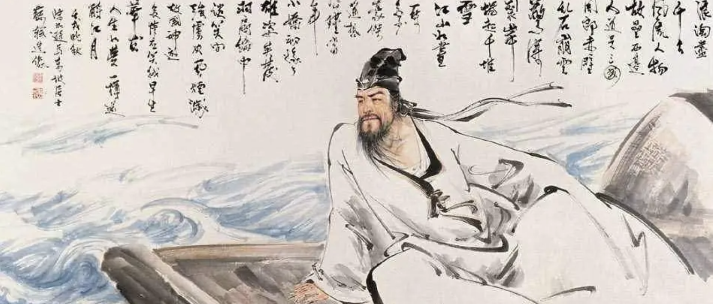

Introduction

Su Shi (1037–1101), also known as Su Dongpo, was one of the most
celebrated poets, essayists, and statesmen of the Song Dynasty in China.
A towering figure in Chinese literature, Su Shi was known for his
versatility—mastering poetry, prose, calligraphy, painting, and public
service.
His life was marked by dramatic shifts in fortune: from high-ranking
official positions to political exile. These personal experiences deeply
shaped his writing, which ranges from bold patriotic expression to
profound philosophical reflection and serene detachment.
Su Shi’s works are admired for their emotional depth, intellectual
insight, and vivid connection to nature. His legacy continues to
influence Chinese aesthetics, literature, and thought.
Su Shi's Life Journey Map
This interactive map presents the key geographic stages in the life of
Su Shi (1037–1101), a renowned Chinese poet, statesman, and scholar of
the Song Dynasty. The map traces his movements through various cities
during different phases of his life—from his early years in Meishan, to
his political peak in Mizhou, through his exile in Huangzhou and
Danzhou, and finally his return north to Changzhou.
Each marker on the map corresponds to a significant location tied to Su
Shi's biography. The dashed line represents the chronological trajectory
of his journey, and directional arrows indicate the historical flow of
his life path. By visualizing the spatial dimension of Su Shi’s life,
this map allows users to explore how geographic displacement intertwined
with poetic expression, emotional transformation, and historical
context.
Emotional Evolution of Su Shi
This radar chart shows how Su Shi’s poetic style changed across four
life stages: Early Years, Political Peak, Exile in Huangzhou, and Later
Years. Each axis represents a dimension like boldness, emotional depth,
or philosophical thinking.
Click a phase to see how his writing evolved—from youthful ambition, to
political passion, to reflective calm in later life.